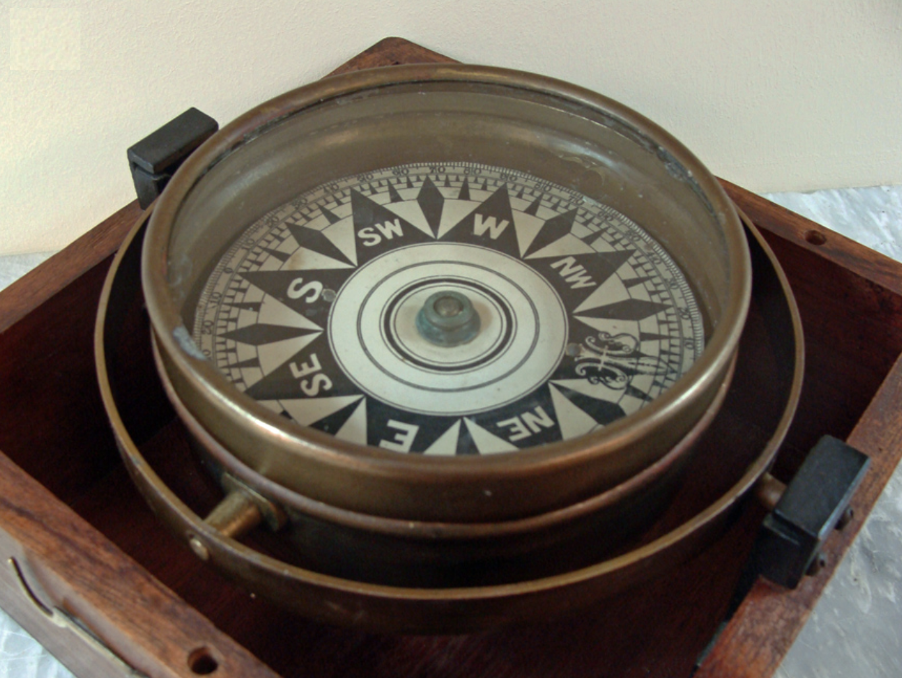

The dry card bowl compass was first invented in medieval Europe around 1300 A.D. Initially, just like the Chinese, the Europeans used lodestone due to its naturally magnetic qualities. However, in 1745, Gowin Knight, an English inventor, developed a method for magnetizing steel; this replaced the use of lodestone with magnetized steel. The compass card was made of rice paper due to its lightweight qualities and how it was unaffected by temperature. The card was divided into quarters, each marked with increments of 0 to 90 degrees, and the quarters were glued together to form a circle. The card was then threaded to an aluminium ring and placed below the tip of the compass pivot so that the card would be free to rotate.
The card would turn when a ship changed direction, indicating the course that the ship was on, allowing it to be widely used for naval uses, by navigators during seafarings. However, the dry-card comapsses were easily disturbed by shocks and vibrations during seafarings, and improvements in liquid compasses by the early 20th century led to the replacement of the dry card bowl by the wet card compass.
The card would turn when a ship changed direction, indicating the course that the ship was on, allowing it to be widely used for naval uses, by navigators during seafarings. However, the dry-card comapsses were easily disturbed by shocks and vibrations during seafarings, and improvements in liquid compasses by the early 20th century led to the replacement of the dry card bowl by the wet card compass.